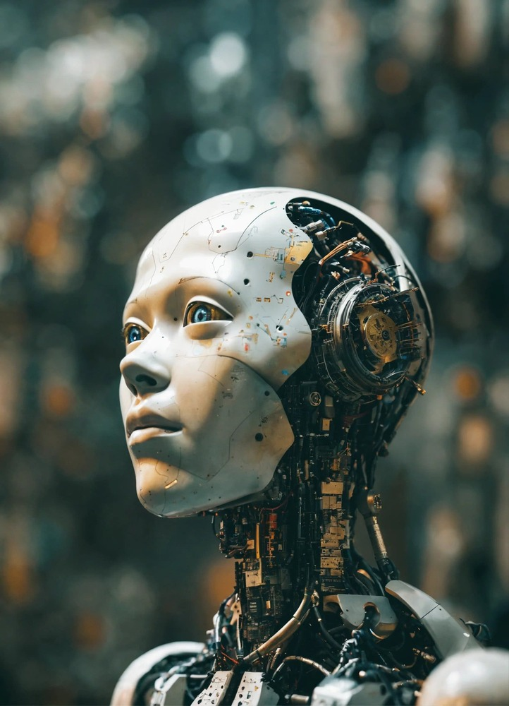

Штучний інтелект: Революція в Житті Людини
Вступ у світ штучного інтелекту
Штучний інтелект (ШІ) - це широкий напрямок інформатики, спрямований на створення систем, здатних імітувати людський інтелект. Це включає в себе використання різноманітних методів, таких як алгоритми, машинне навчання та нейронні мережі, для вирішення завдань, які вимагають аналітичних і інтелектуальних здібностей.
ШІ в повсякденному житті
- Голосові помічники: Технології розпізнавання мови, використовувані у голосових помічниках, дозволяють користувачам взаємодіяти з пристроями голосом, виконувати команди та запитувати інформацію, що значно спрощує повсякденні завдання.
- Медицина: В медичній галузі ШІ використовується для аналізу медичних зображень, діагностики захворювань та прогнозування хвороб, що призводить до більш раннього виявлення та ефективного лікування.
Революція в освіті та бізнесі

- Освіта: Платформи онлайн-навчання використовують ШІ для персоналізації навчання, надаючи студентам індивідуальні матеріали та завдання відповідно до їхнього рівня знань, забезпечуючи більш ефективний навчальний процес.
- Бізнес та автоматизація: В бізнесі технології штучного інтелекту застосовуються для оптимізації процесів, аналізу даних та автоматизації рутинних завдань, що підвищує ефективність та сприяє інноваціям.
Етичні питання та виклики
- Безпека даних: З разом із зростанням використання ШІ виникають питання про безпеку даних. Забезпечення захисту особистої інформації стає ключовим аспектом розвитку технології.
- Прозорість алгоритмів: Потреба у прозорості алгоритмів стає актуальною, щоб користувачі та суспільство могли розуміти принципи прийняття рішень та уникати можливих проблем.
- Недопустиме використання: Виникає потреба в контролі за тим, щоб ШІ використовувався етично і не призводив до негативних наслідків, таких як дискримінація чи порушення приватності.
Висновок
Штучний інтелект трансформує наш світ, приносячи в нього поліпшення та інновації. Проте для забезпечення позитивного впливу важливо приділяти увагу етичним аспектам та безпеці даних, створюючи баланс між розвитком технології та захистом інтересів людини.